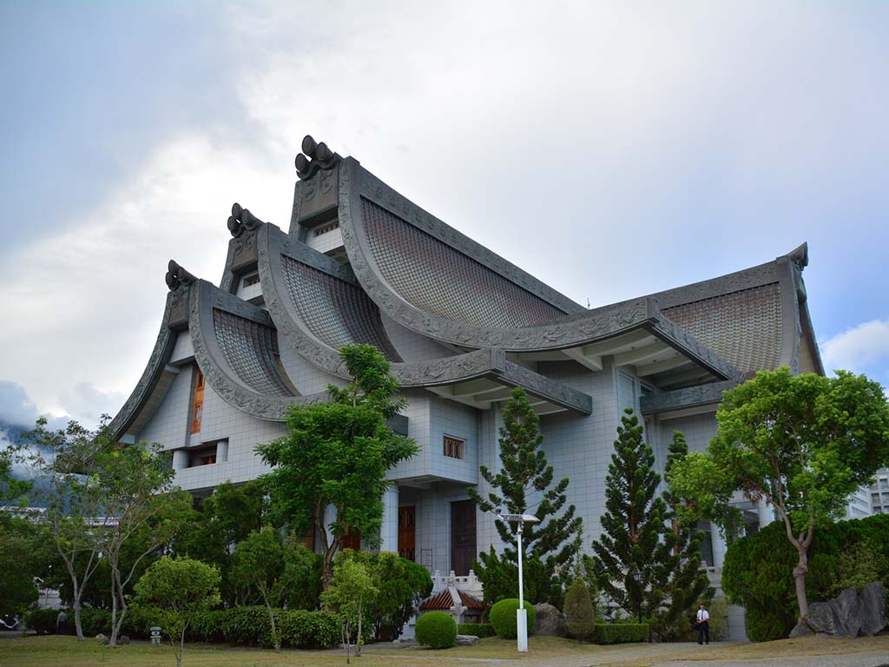
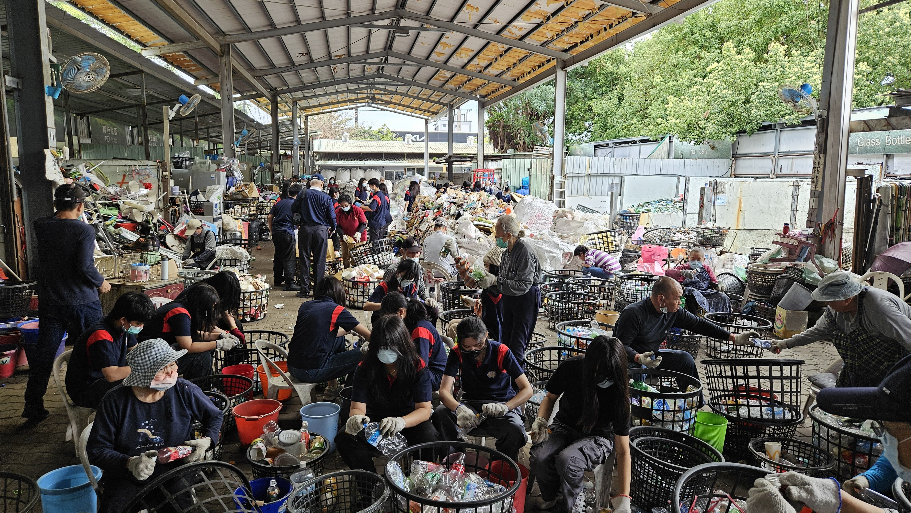
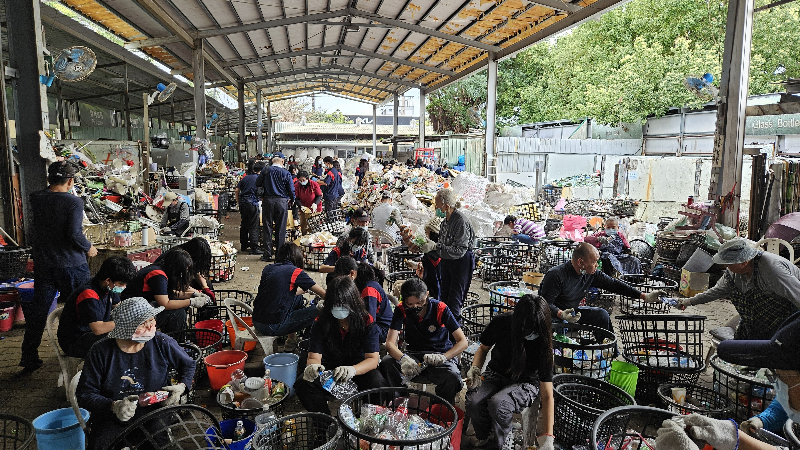

📞Refleksi Community Service🪷
 

- 📖Ceritakan kegiatan CS yang kalian lakukan [kepada siapa kamu melakukan, apa tujuan yang kamu melakukan, bagaimana cara kamu melaksanakan]
- 📜Evaluasi CS [apakah tujuan kegiatan ini tercapai, bagaimana tanggapan orang-orang yang menjadi sasaran kegiatanmu]
- ✝Refleksi atas kegiatan CS:sebagai murid Kristus, kita harus menyangkal diri, memanggul salib dan Yesus jelaskan bahwa:
- a. kegiatan CS ini menurutku merupakan pelaksanaan sebagai murid Yesus yang menyangkal diri
- b. jelaskan bahwa kegiatan CS ini merurutmu merupakan pelaksanaan sebagai murid Yesus yang memanggul salib.
- c. Jelaskan bahwa kegiatan CS ini merupakan pelaksanaan sebagai murid Yesus yang mengikuti Yesus!
Aku melakukan untuk pada para warga sekitar Hualien. Tujuannya untuk memilah sampah dan mengurangi sampah. cara akau melakukannya dengan dari instruksi orangnya. orang-orang CS memandu kami untuk mengola sampah dengan baik dan benar, dengan cara memisahkan bekas plastik dan kertas yang nanti plastik yang akan di olah lagi.
Tujuannya untuk memberi tahu orang-orang cara memilah sampah. tanggapan orang-orang yang menjadi sasaran kegiatan sangat
Dari kegiatan CS ini banyak sekali orang-orang yang tidak mau mengikuti kegiatan ini walaupun sangat bagus dan mendidik. Dari sini banyak yang tidak mau tapi mereka melawannya untuk tetap melakukannya.
>Dari pengamatanku banyak yang CS adalah orang tua yang sudah sekitaran berumur 70 tahun. dari sini banyak sekali orang tua yang menjadi relawan dibandingkan orang muda.
Dari pelaksanaan ini bisa menjadi contoh murid Yesus yang mengikutinya. Dari kegiatan CS ini mengharapkan yang belajar kesana bisa mengikuti jejak orang tua tersebut untuk menjadi relawan seperti mengikuti Yesus dalam setiap ajarannya.